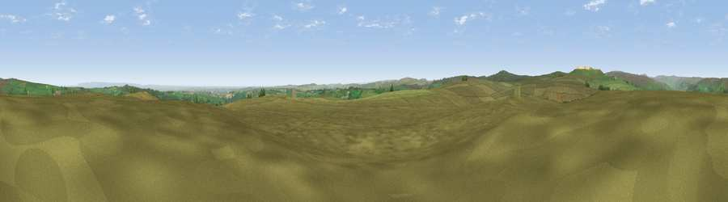

Old Wife Ridge
#10967 in England · top 13% of its area beats it · near BewerleyThe view, rendered

A 360° render of this exact spot computed from the terrain model, tree cover and land cover — summer colours, afternoon light, calibrated against photographs of famous viewpoints. Real trees, hedges and buildings will differ in detail.
The panorama
Grey silhouette: terrain skyline in each direction (720 bearings, Earth curvature and refraction included). Dashed green: skyline with trees (+15 m) and buildings (+8 m) as obstacles. Blue strip: how far the ground is visible on each bearing.
Where the view opens
Wedge length = distance to the farthest visible ground on that bearing (vegetation-aware). Rings at 10, 25 and 50 km.
What fills the view
93% grassland · 4% woodland · 2% cropland ·
Angular shares of the visible panorama (visual magnitude), not map area. Landscape diversity 0.13 (0–1 Shannon).
Key numbers
More beautiful places nearby
The staircase of upgrades: each row has a higher view potential than everything closer. Driving times are estimates from straight-line distance, calibrated against real road routing — check an actual route before setting out.
| Place | Direction | Drive | Score |
|---|---|---|---|
| High Crag Ridge | ENE · 1 km | ~2 min | 67.6 |
| Viewpoint near Bewerley | WNW · 3 km | ~8 min | 75.7 |
| Viewpoint near Bewerley | WNW · 4 km | ~8 min | 76.8 |
| Viewpoint near Otley | SSE · 19 km | ~32 min | 77.5 |
| Viewpoint near East Witton | N · 22 km | ~37 min | 77.8 |
| Viewpoint near Kirby Knowle | NE · 39 km | ~58 min | 80.5 |
| Viewpoint near Thirlby | ENE · 41 km | ~60 min | 81.5 |
| Beacon Hill | NE · 48 km | ~68 min | 84.7 |
54.05981, -1.75809 · source: osm peak · position refined by local search. Computed location — check access rights before visiting.